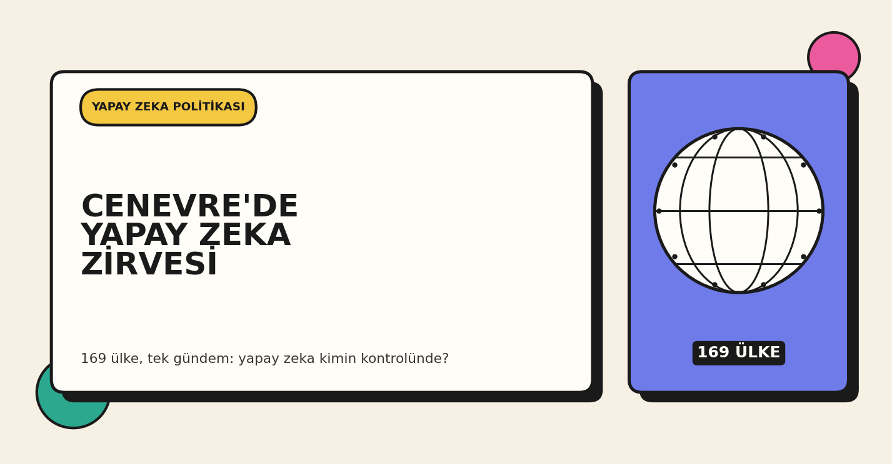
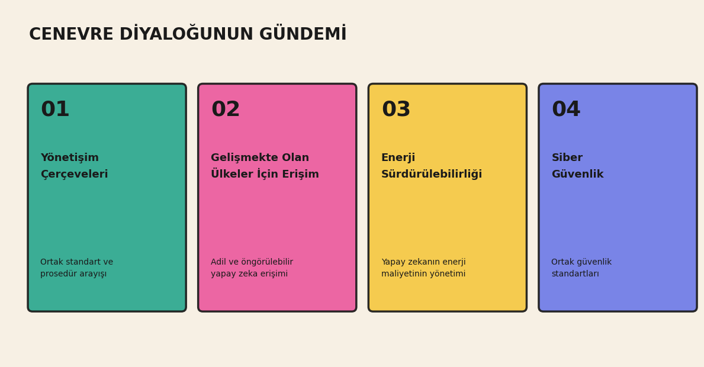

The UN Gathered in Geneva for AI Governance
What's being discussed in the two-day dialogue attended by 169 countries

What happened
Today in Geneva, the United Nations' first "Global Dialogue on AI Governance" got underway. Representatives from 169 countries are taking part, and the meeting runs through tomorrow. It was formally established by a resolution of the UN General Assembly and is jointly run by the ITU, UNESCO, and the UN Office for Digital and Emerging Technologies. It is co-chaired by Egriselda López of El Salvador and Rein Tammsaar of Estonia.
The agenda covers four main themes: AI governance frameworks, AI access for developing countries, AI and energy sustainability, and AI and cybersecurity. Tomorrow the ITU AI for Good Summit begins in Geneva, and on July 8 the newly established UN AI for Good Commission will hold its first meeting. The commission includes figures such as Jensen Huang of Nvidia, Andy Jassy of Amazon, Brad Smith of Microsoft, and Jack Clark of Anthropic.

Why it matters
The goal of the meeting isn't to sign a binding treaty, but to get participating countries to agree on a shared vocabulary and minimum procedural standards. Different countries have different priorities around AI access and regulation, and this dialogue exists to bring those differing priorities to the same table. One development that's made this timely: last month an AI model was temporarily cut off from global access under export controls — an event that pushed the question of access assurance and predictability onto the international agenda.
What it means for developers in Turkey
Most teams building AI products in Turkey base a significant part of their infrastructure on frontier models sourced from abroad (families like GPT, Claude, and Gemini). The discussions in Geneva show that how access to such models will be regulated in the long run is still an unsettled area. That's exactly why it's worth building flexibility into access planning and evaluating alternatives — such as open-source models that can run locally.
My take
In our fine-tuning experiment with the Qwen3.5 family, we saw firsthand that having an alternative you control, rather than depending on a single external model, gives you real practical flexibility. In that experiment the issue was cost and hardware. The discussions in Geneva show that access planning has an international regulatory dimension too, not just a technical one. That's why I now think of building local, open-source model capability as more than a technical preference — it's a form of insurance.